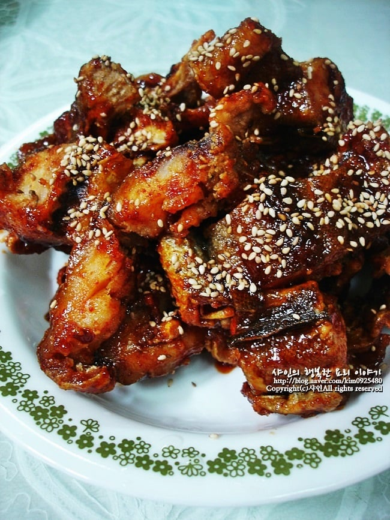
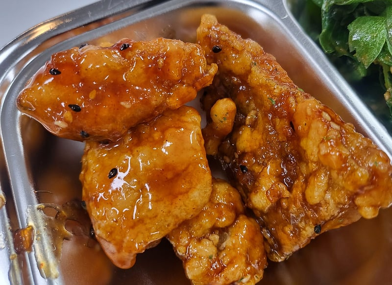

'코다리강정'.... 초등학교때 처음 먹어보고 맛있어서 더 받았었는데....
친구들이 매우 이상하게 쳐다보면서 '너 먹을래?' 한 반찬이었음 ㄹㅇ....

개인적으로 눅눅한 튀김옷을 선호한데다 생선까스도 매우 좋아해서 잘 먹었던거 같음 ㄹㅇ....

'코다리강정'.... 초등학교때 처음 먹어보고 맛있어서 더 받았었는데....
친구들이 매우 이상하게 쳐다보면서 '너 먹을래?' 한 반찬이었음 ㄹㅇ....

개인적으로 눅눅한 튀김옷을 선호한데다 생선까스도 매우 좋아해서 잘 먹었던거 같음 ㄹㅇ....
복불복 가시 있음 + 비린맛 못잡아서 존나 비림 생선들은 저가 급식으로 내기엔 솔직히 별로라고 생각함
22222 단가 안 맞는 급식에선
제발 생선 낸다고 말라 비틀어진 존나 비린 병신 생선 구이인지 찜인지조차 구분 안가는 식감 개박살난 거 내놓지 말고 걍 제육볶음이나 편성했으면 좋겠음
가시만 없으면 우걱우걱 쌉가능인데 가시 씹혀서 안 먹었음
순살이래놓고 개구라야 걍
난 코다리는 좋았는데 생선까스는 싫어했음